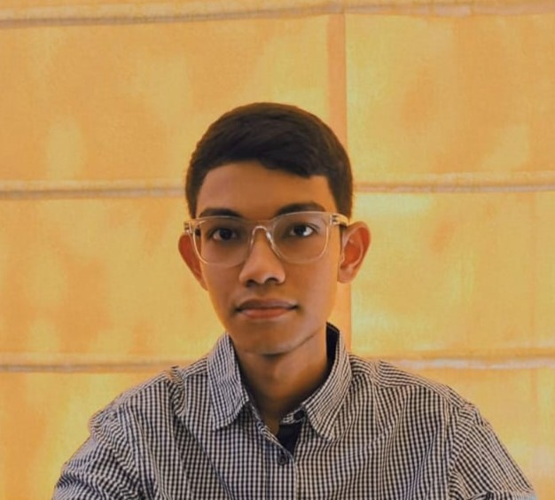

TINT Project Showcase 1st Runners Up
28th February, 2026

AI & ML Developer | Computer Vision and Robotics Enthusiast
Aspiring AI and ML Engineer passionate about building vision-based intelligent systems that bridge perception and action. Experienced with TensorFlow, OpenCV, and FastAPI, with a focus on real-time robotics and applied AI. Demonstrated success in YOLO model tuning, gaze-based control systems, and self-balancing robotics. Currently advancing skills in RAG and Agentic AI.
28th February, 2026
Built a self-balancing robot using PID control.
Ideation and Development of Pulse Pay - A Pay As You Go Payment System using Blockchain.
Techno International New Town.
Internal Smart India Hackathon 2025 at Techno International New Town.
Developed a YOLOv8x segmentation-based pipeline to isolate head-torso regions of students. Integrated a TensorFlow CNN model to classify focused vs. distracted students and served the model via a FastAPI backend.
Trained a SVM model to predict heart disease risk based on patient attributes, achieving 90% accuracy. Showcased various data preprocessing techniques. Trained on open source dataset from Kaggle.
Built a camera-based control interface where an ESP32-driven robotic vehicle aligns its direction with the user's head position tracked via MediaPipe and OpenCV.
Designed a two-wheeled bot using PID control algorithms for dynamic balance correction. Integrated sensor feedback and motor control loops for stability optimization.
Tuned a YOLO-based object detector for post-disaster search-and-rescue tasks to identify survivors or critical objects in rubble imagery.
Implemented a Decision Tree Classifier using scikit-learn to classify iris flower species, demonstrating understanding of supervised learning workflows.